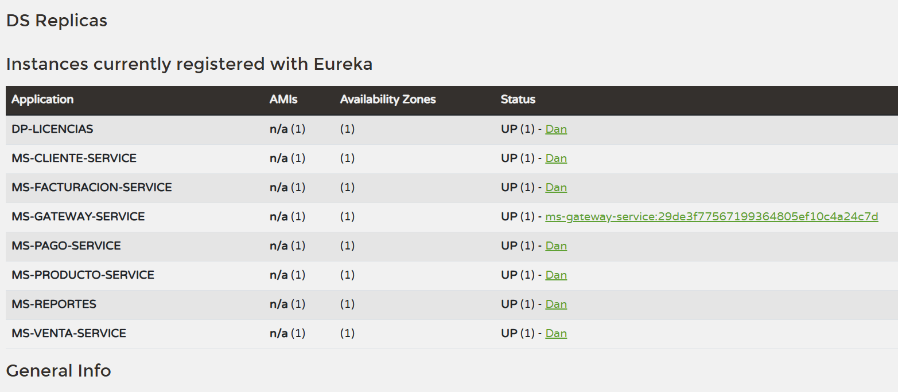
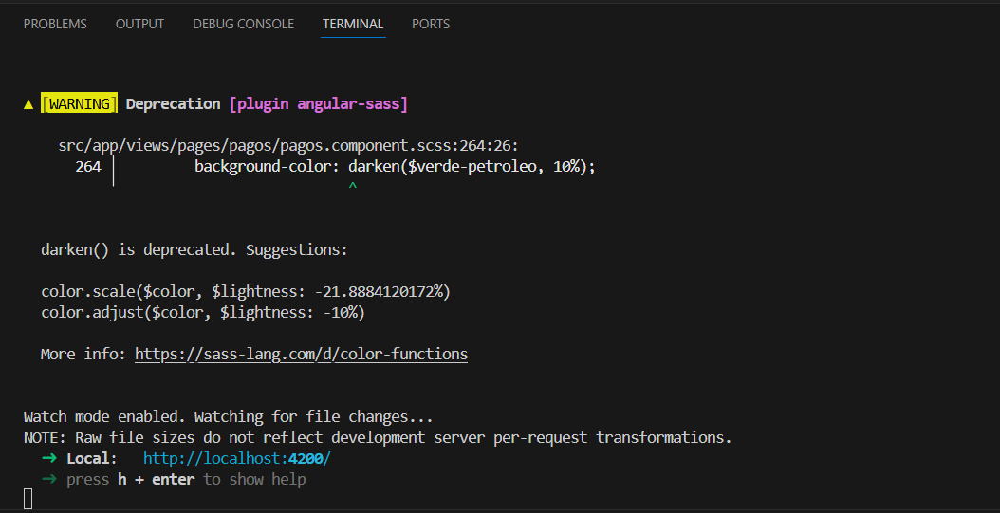
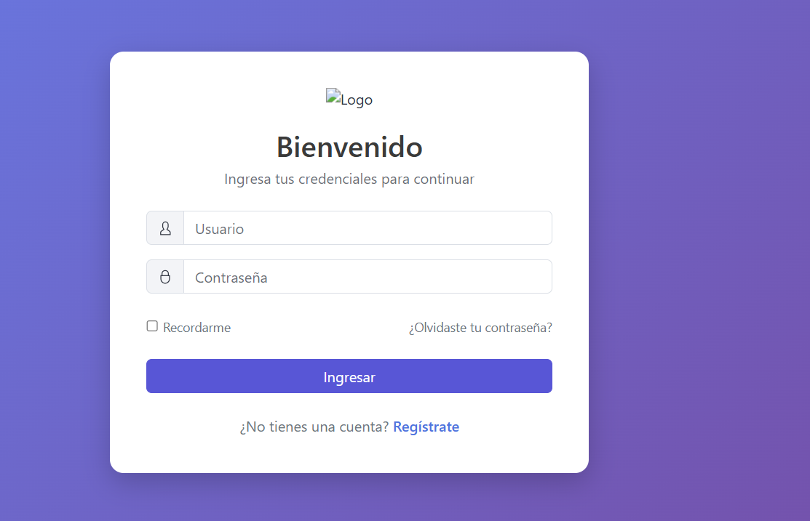
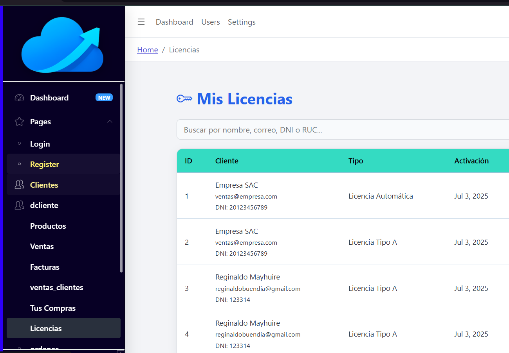
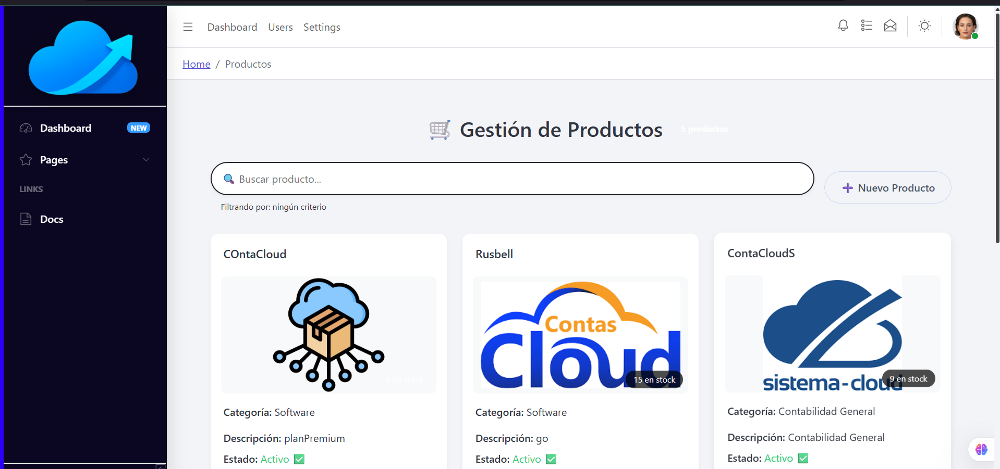
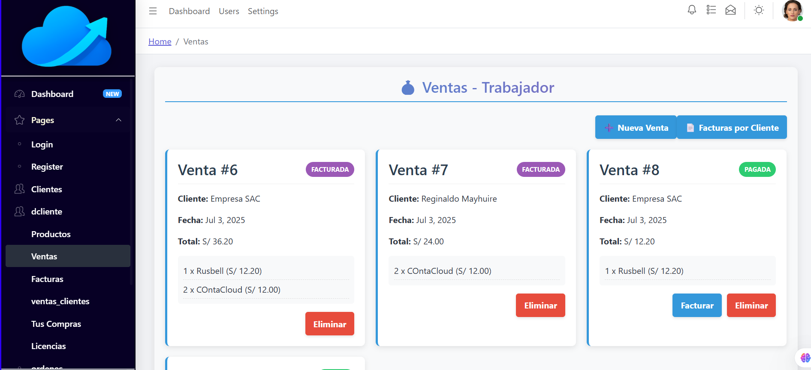
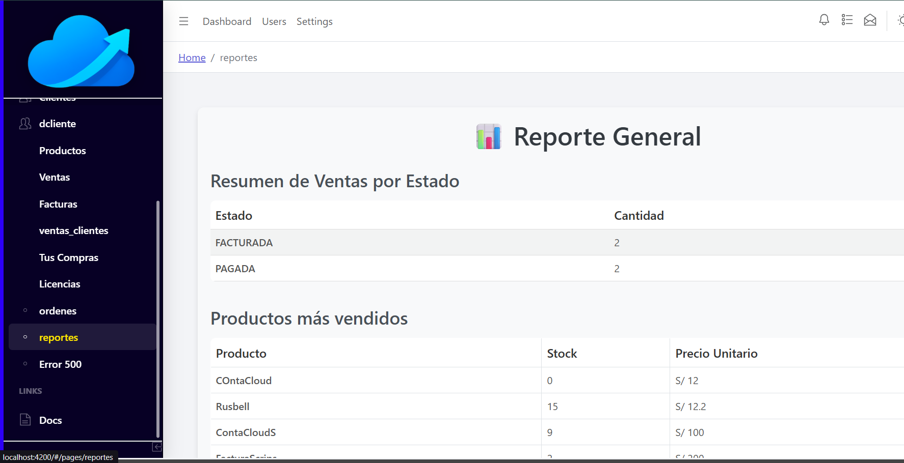
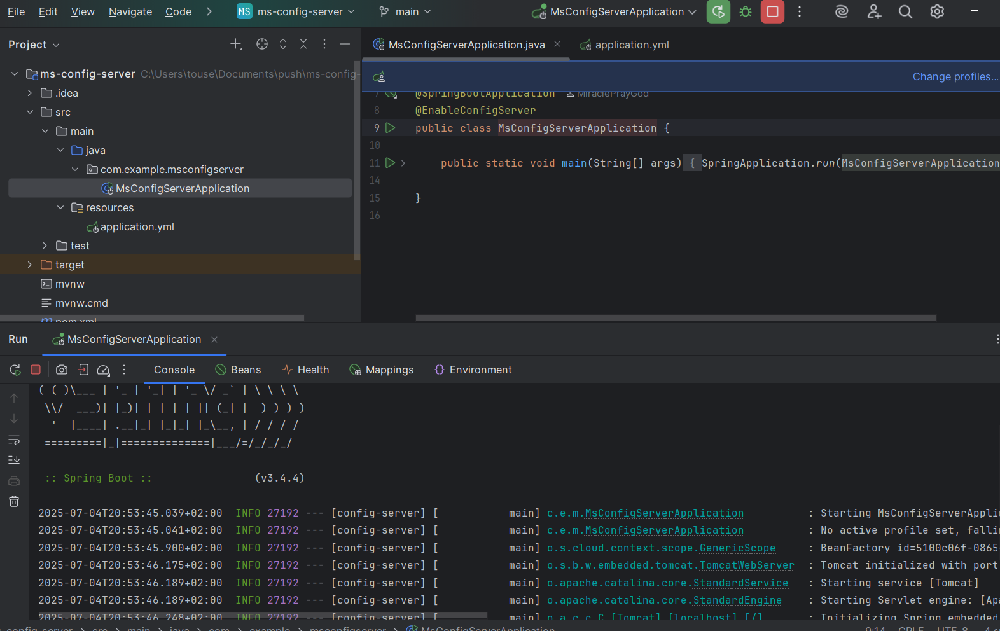
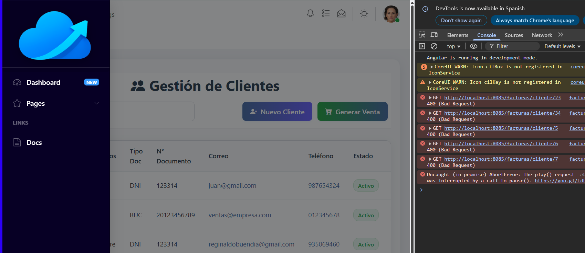

Tecnoventas es una solución integral para la gestión de ventas, inventario y reportes en negocios de cualquier tamaño. Permite registrar productos, realizar ventas, consultar reportes y administrar usuarios de forma sencilla y segura.
Este manual te guiará paso a paso para instalar, configurar y aprovechar todas las funcionalidades del sistema, tanto en el backend (servidor y base de datos) como en el frontend (interfaz de usuario).
Tip: Usa el buscador o el índice para encontrar rápidamente lo que necesitas.
1. Requisitos previos
Node.js y npm: Necesarios para ejecutar el backend y frontend (Descargar Node.js).
Git: Para clonar el repositorio del proyecto (Descargar Git).
Visual Studio Code: Editor recomendado para modificar el código.
Navegador web actualizado: Chrome, Firefox, Edge, etc.
Base de datos: (Ejemplo: MongoDB o MySQL, según tu backend).
Advertencia: Si usas Windows, ejecuta la terminal como administrador para evitar errores de permisos.
Si tienes dudas sobre los requisitos, consulta con el administrador del sistema.
2. Instalación y ejecución del Backend
Paso 1: Clonar el repositorio
Abre la terminal y ejecuta el siguiente comando para descargar el código fuente del backend:
Reemplaza la URL por la de tu repositorio si es diferente.
Paso 2: Instalar dependencias
Accede a la carpeta del backend y ejecuta:
cd tecnoventas-backend npm install
Esto descargará todas las librerías necesarias para que el backend funcione correctamente.
Paso 4: Ejecutar el backend
Inicia el servidor con:
ejecuta todos los microservicios
El backend debería estar corriendo en http://localhost:8090 (o el puerto configurado).

3. Instalación y ejecución del Frontend
Paso 1: Instalar dependencias
Accede a la carpeta del frontend y ejecuta:
cd tecnoventas-front npm install
Esto instalará las librerías necesarias para la interfaz de usuario.
Paso 3: Ejecutar el frontend
Inicia la aplicación con:
npm start
El frontend debería abrirse en tu navegador en http://localhost:4200 (o el puerto configurado).
Si no se abre automáticamente, copia la URL y pégala en tu navegador.

4. Uso de la aplicación
Paso 1: Iniciar sesión
Ingresa a la aplicación con tu usuario y contraseña proporcionados por el administrador.
Si es tu primer acceso, usa las credenciales iniciales y cambia tu contraseña después de ingresar.
Abre el navegador y ve a http://localhost:4200.
Ingresa tu usuario y contraseña.
Haz clic en Iniciar sesión.

Si olvidaste tu contraseña, haz clic en "¿Olvidaste tu contraseña?" para recuperarla.
Paso 2: Navegar por el menú principal
El menú lateral te permite acceder a todas las secciones del sistema:
Productos, Ventas, Reportes, Usuarios, etc.
Haz clic en cada opción para ver sus funcionalidades.

Paso 3: Registrar un nuevo producto
Para agregar productos al inventario:
Haz clic en Productos en el menú.
Presiona Agregar producto.
Completa el formulario con nombre, precio, stock, categoría, etc.
Haz clic en Guardar.

Verifica que todos los campos obligatorios estén completos antes de guardar.
Paso 4: Realizar una venta
Para registrar una venta:
Selecciona Ventas en el menú.
Haz clic en Nueva venta.
Elige los productos y cantidades.
Confirma la venta haciendo clic en Finalizar.

Paso 5: Consultar reportes
En la sección Reportes puedes visualizar estadísticas de ventas, productos más vendidos, ingresos por periodo, etc.
Usa los filtros para personalizar la información.

Puedes filtrar los reportes por fecha, producto o usuario.
Paso 6: Cerrar sesión
Para salir del sistema:
Haz clic en tu nombre de usuario (arriba a la derecha).
Selecciona Cerrar sesión.
Glosario
Backend: Parte del sistema que gestiona la lógica y la base de datos. Frontend: Interfaz visual con la que interactúa el usuario. Dependencias: Paquetes o librerías necesarias para que el sistema funcione. Repositorio: Lugar donde se almacena el código fuente. .env: Archivo de configuración de variables de entorno. Stock: Cantidad disponible de un producto. Reporte: Visualización de datos estadísticos del sistema.
Preguntas frecuentes
¿Qué hago si no puedo iniciar sesión?
Verifica tu usuario y contraseña. Si el problema persiste, contacta al administrador.
¿Cómo agrego un nuevo usuario?
Ve a la sección Usuarios y haz clic en Agregar usuario.
¿Puedo usar el sistema desde mi celular?
Sí, la interfaz es responsiva y funciona en dispositivos móviles.
¿Cómo restablezco mi contraseña?
Haz clic en "¿Olvidaste tu contraseña?" en la pantalla de inicio de sesión y sigue las instrucciones.
Solución de problemas
El backend no inicia:
- Verifica que config-server este prendido.
- Revisa el localhost:8090
- Consulta los mensajes de error en tu depuracion.

El frontend no conecta con el backend:
- Asegúrate de que la URL del backend esté bien configurada la url de la api del backend.
- Verifica revisa tu console aprentando f12 para ver el error, en la imagen siguiente hay un ejemplo si tienes erro

Errores de permisos:
- Ejecuta la terminal como administrador.
Contacto y soporte
Para dudas o soporte, escribe a soporte@tecnoventas.com o consulta la documentación técnica incluida en el repositorio.